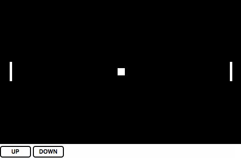

Game Networking Techniques, Explained with Pong
Web application development is increasingly focused on speed. Content delivery networks spread over the globe ensure that their users are never far away. Websites compress images, minify stylesheets and concatenate scripts before sending these resources in gzip-encoded HTTP responses. Even Google's ranking algorithm now factors in website speed.
After the gap between initial request and final response has been fully optimized, rich web applications use WebSockets and provide instant feedback to further increase application speed. RESTful clients that used to be unaware of data changes on the server can now maintain a connection with the server to receive real-time updates. Applications can be optimistic about the likelihood that favoriting a Tweet or sending a chat message will be successful and mask network latency by displaying a confirmation immediately.
I released Conway's Multiplayer Game of Life after testing it in high-latency conditions, but I didn't experience these conditions on the main server until spending several months traveling Asia. When playing the game with a ping time of almost a full second, the client can no longer be optimistic that a cell placement will be successful. This made me curious about how other games handle networking.
After reading Glenn Fielder's excellent (and, as I've discovered, ubiquitous) article What Every Programmer Needs to Know About Game Networking, as well as entering a rabbit hole of John Carmack blog posts and articles about managing state in online games, I decided to learn more about how games designed to be played in older network environments handle multiplayer play. I ended up building a multiplayer version of Pong that runs in a web browser and uses WebSockets (with Socket.IO). It has three networking modes: lockstep, terminal client, and predictive client.
You can see the code I wrote on Github. The game itself is very rudimentary, and there is no cheat detection.
Peer-to-Peer Lockstep
Lockstep networking was the preferred solution for multiplayer games designed to be played over LAN, where bandwidth is more of a concern than network latency. Doom is the classic example of a twitch-based game that used the lockstep protocol. In Doom, each peer in a game determines its action for the next frame of animation based on user input and sends this information in a packet to every other peer. As soon as every peer has received the other peers' intended moves, they render the next frame and repeat the process.
Pong is twitch-based, like Doom. It is also deterministic, meaning that the current state of a game of Pong can be determined by modifying an initial state by a series of player actions. Each player in Pong can either move up, move down, or not move. A peer sends its move for the current frame after a key is pressed, or sends a non-move frame after the length of a frame has passed with no keys being pressed.
Every peer in lockstep networking always has a copy of the canonical state. In a very low-latency environment, the game plays flawlessly at a decent framerate.
Unfortunately, because lockstep networking requires each peer's action to be sent before the game proceeds and the next frame is rendered, the latency between machines slows execution of the game down. Here is the game with a 100ms one-way trip time between machines:
The framerate is at the mercy of the highest latency peer. Lockstep networking over the internet does not work well for games like Pong.
Terminal Client
To support online play, Quake shipped with multiplayer that used a pure client/server model. In this model, clients communicate with a server directly, instead of sending packets to a group of peers. Clients send actions to a server running a simulation of the game world and render the changes the server makes to this world when it responds.
In Pong, this model requires that the client of a player attempting to move a paddle up will send its keypress to the server. The server will use this keypress to update the player's position in the game state and sends a response to each client containing the player's new position.
Because the client acts as a mere terminal without running a local simulation of the game, the round-trip time between the client and server will pass before the client can render the paddle moving up. The round-trip time between my server (the one that generated this page, hosted in San Francisco) and my client (a laptop, currently in a cafe in Bangkok with some sort of high-speed connection) is about 400ms. This amount of latency in terminal-client mode makes Pong almost unplayable.
The round-trip latency causes a significant delay between the player's keyboard input and the movement of the player's paddle. The framerate of the game is still high because the network throughput between the client and server is high, but the experience still feels slow.
Client-side Prediction
To give the player immediate feedback after a keypress, the client can predict what the state of the server is going to be after it receives the player's input and render this immediately. The client then reports its new position to the server. To predict the proper state change, the client must also simulate the game world. In Pong, the client only needs to simulate where the local player's paddle and the ball will move in a frame.
In order to prevent cheating, the server must make sure that the client's reported positions are possible and that the player is not manipulating the paddle speed. However, due to latency, the client and server may become out-of-sync. The server may repeatedly inform the client that it needs a correction at this point, which will result in the player "rubber banding" to a position.
To compensate for syncing issues, one strategy is for the server to tolerate a certain amount of difference between what it thinks the player's position should be and what the player reports. Once this is added, rendering the local player's position change immediately leads to a much smoother game, even with 200ms of latency. The local player's paddle moves just as responsively as it would in a single-player game.

While this method appears to be the fastest, it might also be considered the least fair—the state drawn to the canvas is almost never the state as it exists on the server. The clients guess based on their most recent communications with the server, trading the canonical game state for speed. Sometimes, one, both or neither of the clients will properly guess the game state.
The left player's paddle is shown on local player's canvas on the left, and the opponent player's canvas on the right, with a 200ms round-trip time. The left paddle is moving up and down randomly. The opponent's screen is several frames out-of-sync with the local player, causing the ball to pass the paddle on one screen while bounces off the same paddle in the other.
John Carmack wrote about similar issues he encountered while implementing client-side prediction in QuakeWorld:
The latency isn't gone, though. The client doesn't simulate other objects in the world, so you apear to run a lot closer to doors before they open, and most noticably, projectiles from your weapons seem to come out from where you were, instead of where you are, if you are strafing sideways while you shoot.
An interesting issue to watch when this gets out is that you won't be able to tell how long the latency to the server is based on your movement, but you will need to lead your opponents differently when shooting at them.
Despite its flaws, client-side prediction still provides the most responsive experience over the internet.
There are other ways to mask latency and prevent cheating. While this post only follows my experience writing multiplayer code for Pong, there are many good articles on the subject, covering more advanced prediction techniques as well as handling other networking problems like packet loss. Mark Mennell's Making Fast-Paced Multiplayer Networked Games is Hard and Fabien Sanglard's code reviews are both excellent.
Barring the creation of a distributed quantum network, latency can't be avoided. The valley between instant and a small fraction of a second will continue to plague real-time applications. Developers of web applications today need to be as creative as the game developers of the 1990s, to create new ways to mask latency and provide users with the illusion of a faster-than-light experience.